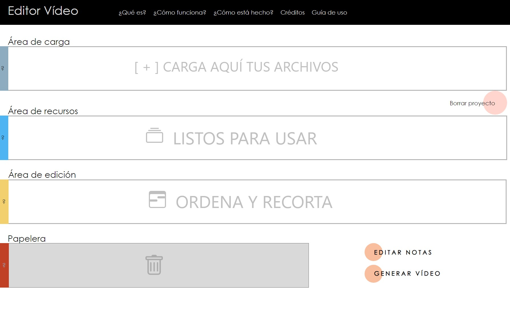
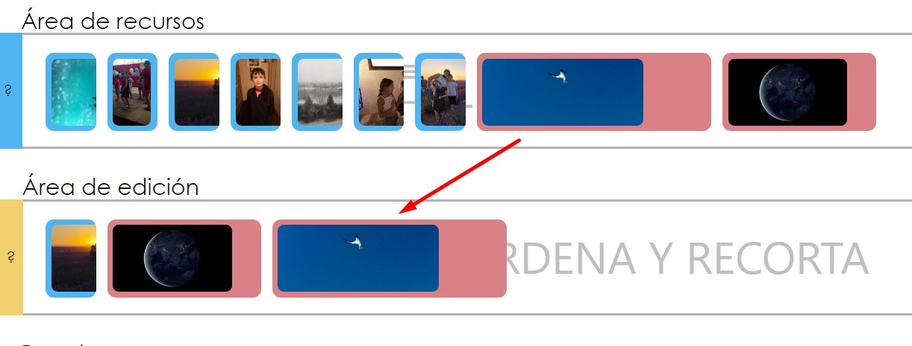
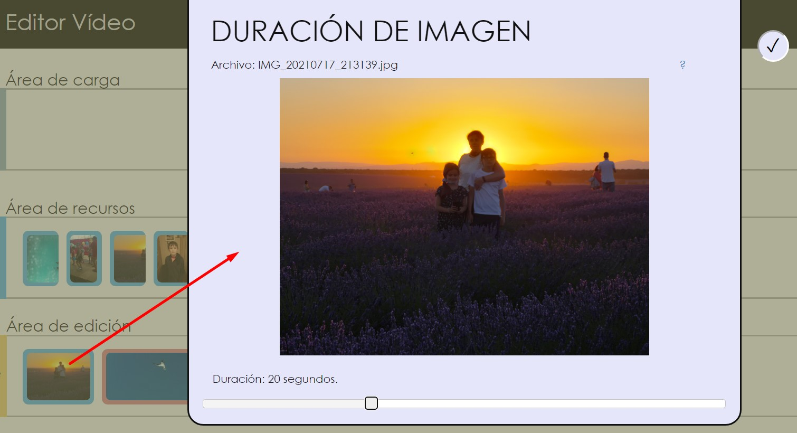

El acceso se hace, sin necesidad de realizar autorización tipo usuario/contraseña ni OAuth, entrando en la dirección activa de escucha. Todas las operaciones se realizarán sin necesidad de navegación por páginas secundarias.

Al entrar se pueden presentar dos escenarios:
Automáticamente, se considera que toda acción realizada formará parte de un proyecto, y todos los cambios se guardarán automáticamente.
Para trabajar en un proyecto de anotación, el primer paso es importar vídeos o imágenes. Para ello se puede hacer clic en el área de carga, que abrirá un diálogo para buscar los archivos, o se arrastrarán a esta zona los archivos que se quieran usar.
Es posible cargar más de un archivo a la vez. Los archivos que no sean de vídeo o imagen serán descartados, así como los archivos ya subidos anteriormente.
Los formatos de archivo con los que se puede trabajar son:
Los archivos son automáticamente almacenados en el servidor y preprocesados. Cuando estén disponibles para su uso, aparecerán en el área de recursos en forma de iconos: su color de fondo depende de si el archivo cargado es un vídeo o una imagen, y su anchura es proporcional a la duración (a las imágenes se les da una duración por defecto de 10 segundos):
Pasando el ratón por encima de cada elemento se puede ver una ventana emergente donde se puede ver la imagen en más tamaño, además del nombre del archivo y de su duración (en caso de vídeo).
Una vez cargados los archivos, se puede comenzar la creación del vídeo a anotar arrastrando los iconos desde el área de recursos al área de edición. Cada recurso puede añadirse al área de edición tantas veces como se quiera.

En el área de edición es posible reordenar los clips arrastrando los iconos para colocarlos antes o después de otro clip.
Cuando queremos borrar un clip de un proyecto en curso, bastará con seleccionarlo y arrastrarlo al área de papelera, situado justo debajo del área de edición. Sólo los clips que estén en el área de edición pueden ser borrados, y sólo se borrará la copia que ha sido seleccionada.
Los clips que hay a la derecha del clip eliminado se reordena para evitar dejar huecos en el vídeo final.
Es posible elegir qué rango de un vídeo se quiere emplear en el proyecto final. Para ello, se hará clic en el icono correspondiente del área de edición; se abrirá una ventana emergente en la que aparecerá el vídeo en cuestión y una barra de desplazamiento con dos controles: uno para determinar el inicio y otro para determinar el fin del recorte de ese clip.
Los cambios se aplican automáticamente. Para cerrar esta ventana, puede pulsarse la tecla Escape o hacer clic en el botón de marca que hay arriba a la derecha de la ventana emergente.
Al igual que se hace con los vídeos, es posible elegir la duración de una imagen en el resultado final. Se hará clic igualmente en el clip elegido, aunque para las imágenes aparecerá en la ventana emergente una barra con un sólo punto de desplazamiento, que permitirá cambiar la duración final de la imagen en un rango de entre uno y sesenta segundos:

Al igual que con los clips de imagen, los cambios se aplican automáticamente y puede cerrarse la ventana haciendo clic en el botón de marca o pulsando la tecla Escape.
Para acceder al editor de notas se debe hacer clic en el botón “Añadir Notas” situado en la parte inferior derecha de la ventana. Se abrirá un recuadro emergente en el que se podrá ver la composición de clips y una barra de desplazamiento para seleccionar el punto de inicio de la nota.
Para crear una nota se debe hacer clic con el ratón sobre la posición donde se desea añadir la nota, considerando que se creará a partir del momento seleccionado con la barra de desplazamiento (por ejemplo, en la imagen anterior las notas se crearán a partir del segundo 81.86).
Para editar una nota creada anteriormente bastará con mover la barra de desplazamiento hasta un momento donde la nota sea visible, y hacer clic sobre ella para poder modificar sus atributos.
Por defecto, cada nota permitirá añadir una línea de texto, en la que se pueden configurar:
Una nota de texto puede cambiarse a nota de imagen haciendo clic en ; aparecerá un listado de stickers precargados en el sistema, así como la lista de imágenes cargadas por el usuario en la zona de recursos. También pulsando este botón se puede cambiar el tipo de imagen que se mostrará en la nota.
Es posible configurar la duración de la nota, ya sea de imagen o de texto, mediante los siguientes botones:
Sólo se mostrarán en el área de edición aquellas notas visibles en el momento elegido en la barra de desplazamiento (por ejemplo, si una nota sólo es visible a partir del segundo 10, mover la barra de desplazamiento al segundo 5 hará que la nota no sea visible).
La visibilidad de los dos tipos de nota se puede modificar mediante las siguientes acciones, que afectan a toda la duración de la nota.
No hay límite de notas por proyecto.
Una vez ordenados los clips en la zona de edición y, opcionalmente, incluidas las notas deseadas, bastará con hacer clic en el botón “Generar vídeo”, situado abajo a la derecha, para que se comience con la creación del vídeo. Se mostrará una barra de progreso según se vayan completando los diferentes pasos, hasta que el vídeo esté completo y se descargue en el navegador en formato mp4.
Las imágenes y vídeos que no tengan una proporción de 16/9 serán redimensionados automáticamente para encajar en el vídeo final.
Durante el proceso de creación del vídeo, será posible cancelar la operación en cualquier momento haciendo clic en el botón de la zona inferior.
La página ofrece una serie de ayudas contextuales, identificadas por el símbolo de interrogación, en diferentes secciones. Haciendo clic en estas ayudas se accede a unos textos que explican brevemente el funcionamiento de cada pantalla.
Por otro lado, haciendo clic en el botón “Borra proyecto” se eliminarán todos los archivos del proyecto, tanto en el cliente como en el servidor, así como las notas creadas. De esta manera se puede comenzar de nuevo con la carga de imágenes y vídeos.